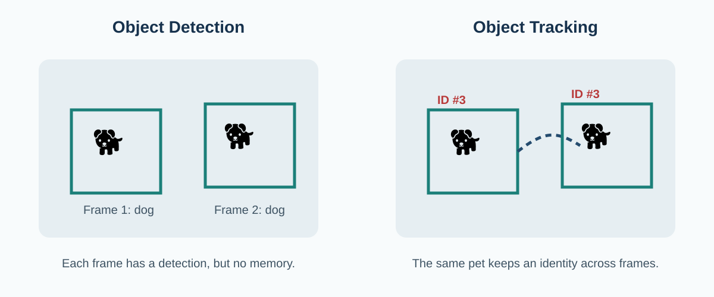

Pet Detection and Tracking
Detection answers “Where is the pet in this image?” Tracking answers “Is this the same pet I saw in the previous video frames?” The two ideas are related, but they solve different problems.
1. Object Detection
An object detector predicts a class label, a confidence score, and a bounding box. For pet monitoring, the detector may return a result such as dog 94% together with the coordinates of the box around the dog.

2. Try Animal Detection
What this example does — and does not do
It does
Detect supported animals in one image and show the predicted class, confidence score, and bounding box.
It does not
Maintain an identity over time. A single image has no previous or next frame, so there is nothing to track.
3. Why Tracking Is Necessary
Wang and Mariano combined a YOLOv8-based detector with ByteTrack for multi-object tracking, showing the common design pattern of using a detector first and a tracker second. [2] Tracking becomes important for restricted-area monitoring because the system must know when one pet enters a region, how long that same pet remains there, and when it leaves.
Research on domestic cats also demonstrates the difficulty of keeping stable identities when animals look similar or overlap. Nakajima and colleagues used fine-tuned object detection and BoT-SORT in a domestic-cat tracking pipeline. [3]
4. Tracking in My Video Demo
For my demonstration, I use YOLO for dog detection and ByteTrack for tracking. The important output added by the tracker is a persistent ID.
result = model.track(
frame,
persist=True,
tracker="bytetrack.yaml",
classes=[DOG_CLASS_ID],
conf=0.25,
verbose=False
)[0]The persist=True setting tells the tracking workflow that the current frame follows the previous frame, so track identities can persist across the video.
5. Detection vs. Tracking
| Question | Detection | Tracking |
|---|---|---|
| Main purpose | Locate and classify an object in one frame | Maintain the object's identity across frames |
| Typical output | Class, confidence, bounding box | Track ID, box, and movement history |
| Example in my project | YOLO detects a dog | ByteTrack keeps it as Dog ID #1 |
| Main failure | Missed or false detection | Lost track or ID switch |
6. Simplified Tracking Logic
for frame in video:
detections = detector(frame)
tracks = tracker.update(detections)
for track in tracks:
dog_id = track.id
box = track.bounding_box
save_position(dog_id, box)Once the system has a stable ID, the next step is spatial reasoning: Is Dog ID #1 inside the restricted area?